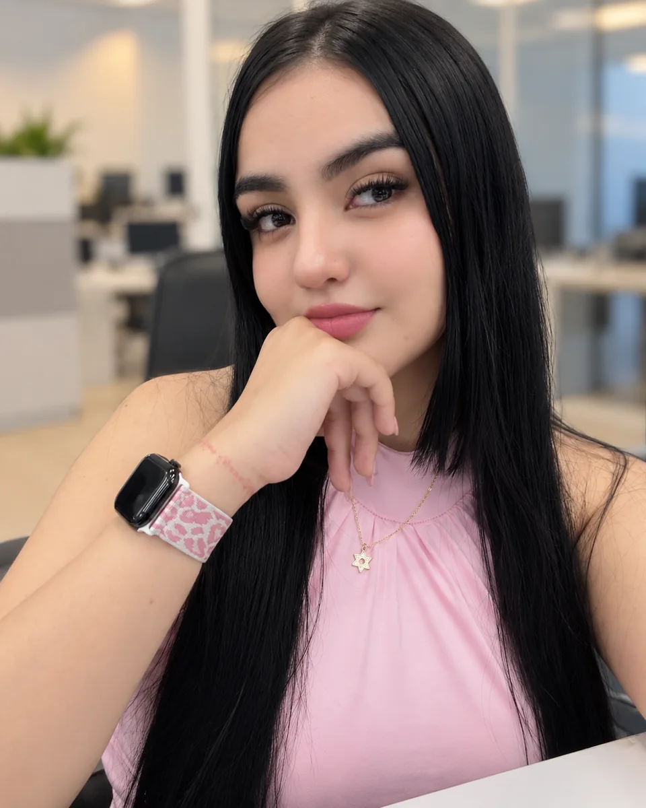

DESARROLLO WEB / 01
Batalla de Cartas
Campuslands · Proyecto de formación
Juego web desarrollado con HTML, CSS y JavaScript, con selección de personajes, arenas, rondas, animaciones y efectos de sonido.
PORTAFOLIO PERSONAL CAMPUSLANDS
Entre la lógica y la creatividad.
Desarrolladora de Software
en Formación
Me formo en Campuslands y desarrollo soluciones web combinando lógica, creatividad y atención al detalle. Aprendo construyendo experiencias claras y funcionales.

01 / SOBRE MÍ
La curiosidad es
mi punto de partida.
Actualmente me estoy formando en programación y desarrollo de software en Campuslands, donde he podido fortalecer tanto mis conocimientos técnicos como diferentes habilidades.
Durante mi formación he participado en varios proyectos de desarrollo, en los que he aplicado conocimientos de programación, diseño y creación de soluciones digitales.
Gracias a estas experiencias también he descubierto que soy una persona creativa, proactiva y adaptable, porque disfruto aportar nuevas ideas, buscar soluciones y aprender nuevas herramientas cuando un proyecto lo necesita.
Me gusta especialmente trabajar en proyectos donde pueda combinar la parte técnica con la creatividad, cuidando tanto el funcionamiento como la presentación y la experiencia del usuario.
02 / TECNOLOGÍAS
Tecnologías que utilizo para dar forma a mis ideas.
Estructura, diseño e interactividad.
Información organizada y conectada.
Versiones, colaboración y datos externos.
03 / PROYECTOS
Una selección de proyectos que reflejan mi proceso como desarrolladora.
Campuslands · Proyecto de formación
Juego web desarrollado con HTML, CSS y JavaScript, con selección de personajes, arenas, rondas, animaciones y efectos de sonido.
Campuslands · Proyecto de formación
Plataforma web desarrollada con HTML, CSS y JavaScript, con cartelera de películas, inicio de sesión y registro, selección de asientos, compra de entradas e integración de datos de TMDB.
Campuslands · Proyecto de formación
Base de datos relacional diseñada para gestionar películas, copias, clientes, empleados, alquileres, devoluciones, multas y pagos.
04 / CONTACTO
Un espacio para conectar, compartir ideas y descubrir nuevas oportunidades.